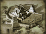
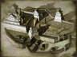

Requires
- Buildings: 
Enables
- Buildings: 
- Units:


Spawned Garrisons
- Units:
Basic Building Statistics (can be modified by difficulty level, arts, skills, traits and retainers)
- Cost: 7200
- +15% increase in resistance to naval bombardment
- Recruitment capacity (units in training): +1
- +7 to repression in this province
Description
A statement of mastery in stone.
Although somewhat old-fashioned, a castle represents power as it looms over the homes of the peasantry; this alone helps suppress dissent. The castle also acts as a recruitment centre in a province. During the Sengoku Jidai, castles were the homes of the great provincial lords, the daimyo. Under the Tokugawa Shogunate, castles remained homes, but lost much of their practical use as fortresses. It would be a foolish enemy indeed who laid siege to a castle, given that at least one close member of an attacker's family would be held hostage at the Shogun's pleasure. There was little reason, then, to be afraid of open attack, although assassination remained a constant concern, even under the Tokugawas. Castles were expensive, though, and a good way of flaunting family wealth without openly counting the contents of the treasury. A great deal of prestige was gained by tasteful patronage of arts and crafts, both to beautify the fabric of the building and as objects to display within.